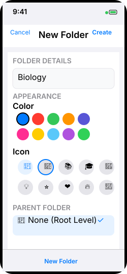

Getting Started
Creating Your First Folder
Folders help you organize your flash cards by subject, topic, or any system that works for you.
Steps:
- Tap the + button in the top toolbar
- Select "New Folder" from the menu
- Enter a name for your folder
- Choose a color and icon (optional)
- Tap "Create" to save
Tips:
- Use descriptive names like "Biology Chapter 5" or "Spanish Vocabulary"
- Color-code subjects for quick visual identification
- Icons help distinguish between different types of content

iPhone: Folder creation interface

iPad: Folder creation interface
Creating Your First Note
Notes are the core of your flash cards, with separate front and back content for effective study.
Steps:
- Open a folder by tapping on it
- Tap the + button
- Select "New Note"
- Add content to the front side (question/prompt)
- Add content to the back side (answer/explanation)
- Tap "Save" when finished

iPhone: Note editing interface

iPad: Note editing interface
App Navigation
Understanding the app's navigation will help you move efficiently between folders and notes.

iPhone: Main folder list view

iPad: Split view navigation
Note Management
Creating Notes
Create effective flash cards with text and image content on both sides.
Note Structure:
- Front Side: Your question, prompt, or term
- Back Side: The answer, definition, or explanation
- Images: Add visual content to either side
- Auto-save: Changes are saved automatically
Best Practices:
- Keep questions concise and clear
- Use images to reinforce learning
- Make answers complete but not overly complex
- Test different question formats

iPhone: Creating a new note

iPad: Creating a new note
Adding Images
Enhance your flash cards with photos, diagrams, and visual content.
To Add an Image:
- While editing a note, tap "Add Image" on the front or back side
- Choose "Camera" to take a new photo or "Photo Library" to select existing
- For camera: Take photo and tap "Use Photo"
- For library: Browse and select your image
- Image appears alongside your text content
Image Tips:
- Images work great for diagrams, charts, and visual references
- Take photos of textbook pages or handwritten notes
- Tap any image to view it full-screen
- Delete images by tapping the X in edit mode

iPhone: Adding images to notes

iPad: Adding images to notes
Organization
Folder Management
Organize your study materials with folders, colors, and hierarchical structure.
Folder Actions:
- Create: Tap + button and select "New Folder"
- Edit: Swipe left on folder and tap pencil icon
- Delete: Swipe left on folder and tap trash icon
- Reorder: Drag folders up or down in the list
Customization Options:
- Name: Descriptive titles for easy identification
- Color: 10 preset colors for visual organization
- Icon: Choose from SF Symbols or emojis
- Parent Folder: Create nested structures

iPhone: Managing folders

iPad: Managing folders
Search Function
Quickly find any note or folder with powerful real-time search.
How Search Works:
- Real-time: Results appear as you type
- All Content: Searches folder names, note text, and content
- Front & Back: Searches both sides of every note
- Case Insensitive: Finds matches regardless of capitalization
Search Tips:
- Use partial words to find multiple matches
- Search for concepts, not just exact phrases
- Clear search to return to full folder view
- Search works across all folders simultaneously

iPhone: Search results

iPad: Search results
Study Features
Study Modes
Two distinct study modes designed for different learning objectives.
Practice Mode:
- Shows both question and answer simultaneously
- Perfect for reviewing and reinforcing knowledge
- Navigate freely between notes
- No time pressure or scoring
Test Mode:
- Shows question first, reveal answer to self-assess
- Timer challenges with 4 difficulty levels
- Track "I Remember" vs "Don't Remember"
- Detailed performance statistics
Starting a Study Session:
- Open any folder with notes
- Tap the "Study" button
- Select Practice or Test mode
- For Test mode: Choose timer difficulty
- Begin studying!

iPhone: Choosing study mode

iPad: Study mode interface
Test Mode Details
Challenge yourself with timed quizzes and detailed performance tracking.
Timer Difficulties:
- Easy: 30 seconds per card
- Medium: 20 seconds per card
- Normal: 10 seconds per card
- Hard: 5 seconds per card
Test Flow:
- Timer starts when note appears
- Read the question/front content
- Think of your answer
- Tap "Reveal Answer" (or wait for timer)
- Compare with correct answer
- Tap "I Remember" or "Don't Remember"
- Automatic progression to next note
Performance Tracking:
- Success rate percentage
- Notes marked for review
- Time-based performance metrics
- Progress visualization with charts

iPhone: Test mode with timer

iPad: Test mode results
Study Statistics
Track your learning progress with detailed statistics for each note and folder.
Individual Note Stats:
- Times Studied: How often you've reviewed this note
- Last Studied: When you last encountered this note
- Confidence Level: 1-5 scale based on your performance
- Review Flag: Marked when you need to study more
Folder-Level Statistics:
- Total Study Sessions: Across all notes in folder
- Average Confidence: Overall mastery level
- Notes Needing Review: Count of flagged notes
- Progress Tracking: Improvement over time
Accessing Statistics:
- View in note detail with "Show Stats" button
- See folder overview in folder management
- Review after completing test sessions

iPhone: Study statistics

iPad: Detailed statistics
Audio & Accessibility
Text-to-Speech
Listen to your flash cards read aloud with high-quality text-to-speech.
How to Use TTS:
- Look for the speaker icon next to text content
- Tap to start reading the text aloud
- Tap again to pause/resume
- Audio stops automatically when changing notes
Where TTS is Available:
- Note Detail View: Both front and back content
- Study Modes: Practice and test modes
- Individual Sides: Play front or back separately
Benefits:
- Great for auditory learners
- Enables hands-free studying
- Helps with pronunciation
- Useful while multitasking

iPhone: Text-to-speech controls

iPad: TTS in study mode
TTS Settings
Customize text-to-speech voice, speed, and other audio preferences.
Accessing TTS Settings:
- Tap the + button in main toolbar
- Select "TTS Settings" from menu
- Adjust settings to your preference
- Use "Test Voice" to preview changes
Available Settings:
- Voice Selection: Choose from available system voices
- Speech Rate: Adjust reading speed (slow to fast)
- Pitch: Control voice pitch (low to high)
- Volume: Set audio volume level
Voice Options:
- Multiple English voices available
- Different accents and voice qualities
- System voices are high-quality and natural
- Settings persist across app sessions

iPhone: Text-to-speech settings

iPad: Text-to-speech settings
Sync & Sharing
CloudKit Sync
Keep your flash cards synchronized across all your Apple devices automatically.
How CloudKit Sync Works:
- Automatic: Syncs in background when connected to internet
- Cross-Device: iPhone, iPad, and other iOS devices
- Real-time: Changes appear on other devices within minutes
- Offline-first: Works perfectly without internet connection
Requirements:
- Same Apple ID on all devices
- iCloud enabled in iOS Settings
- Simple Flash Notes allowed in iCloud settings
- Internet connection for sync
Checking Sync Status:
- Tap + button in toolbar
- Select "iCloud Sync"
- View current sync status
- Troubleshoot connection issues if needed
Troubleshooting:
- Check internet connection
- Verify iCloud account is signed in
- Ensure app has iCloud permissions
- Try refreshing sync status

iPhone: CloudKit sync settings

iPad: CloudKit sync settings
AirDrop Sharing
Share entire folders with friends and study groups using AirDrop.

iPhone: Sharing via AirDrop

iPad: Sharing via AirDrop
Frequently Asked Questions
How many notes can I create?
There's no limit! Create as many folders and notes as you need. The app is designed to handle large collections efficiently.
Does the app work offline?
Yes! All features work completely offline. CloudKit sync happens automatically when you're back online.
Can I import from other flash card apps?
Currently, the app supports importing .simpleflashnotes files shared from other users. We're exploring additional import formats.
Is there a subscription fee?
No! Simple Flash Notes is a one-time purchase with no subscriptions or hidden fees. All features are included.
What image formats are supported?
The app supports JPEG, PNG, and HEIC formats. Images are automatically optimized for storage and performance.
How do I backup my notes?
Your notes are automatically backed up via iCloud sync. You can also share folders to yourself via AirDrop as an additional backup method.
Need More Help?
Can't find what you're looking for? We're here to help!